#CS189HW4 Code
import numpy as np
import sklearn as sk
import matplotlib.pyplot as plt#Problem 1
from sklearn import datasets
dataset = datasets.fetch_lfw_people()
X = dataset['data']fig = plt.figure()
count = 0
for i in range(5):
for j in range(4):
ax = fig.add_subplot(5,4,count+1)
ax.imshow(np.reshape(X[count],(62,47)), cmap = 'gray')
count = count + 1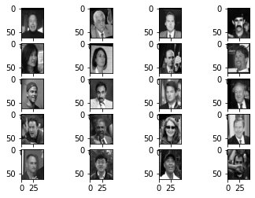
#Part b
X_av = np.mean(X, axis = 0)
X_cent = X - X_av
plt.imshow(np.reshape(X_av, (62,47)), cmap = plt.cm.gray)<matplotlib.image.AxesImage at 0x1f27d6fde40>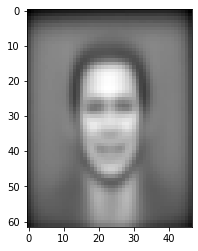
#Part c
X_av.shape(2914,)def my_pca(X,k):
U,sig,V = np.linalg.svd(np.transpose(X) @ X)
U_pca = U[:,0:k]
sig_pca = np.diag(sig[0:k])
Vt_pca = V[0:k, :]
return X@np.transpose(Vt_pca)@Vt_pcaX_rec10 = my_pca(X_cent, 10)
X_rec100 = my_pca(X_cent, 100)
X_rec1000 = my_pca(X_cent, 1000)X_rec10.shape(13233, 2914)#Projections from 10 PCDs
fig = plt.figure()
count = 0
for i in range(5):
for j in range(4):
ax = fig.add_subplot(5,4,count+1)
ax.imshow(np.reshape(X_rec10[count] + X_av,(62,47)), cmap = 'gray')
count = count + 1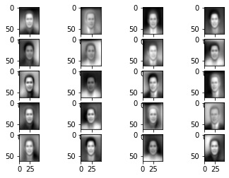
#Projections from 100 PCDs
fig = plt.figure()
count = 0
for i in range(5):
for j in range(4):
ax = fig.add_subplot(5,4,count+1)
ax.imshow(np.reshape(X_rec100[count] + X_av,(62,47)), cmap = 'gray')
count = count + 1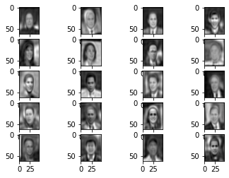
#Projections from 1000 PCDs
fig = plt.figure()
count = 0
for i in range(5):
for j in range(4):
ax = fig.add_subplot(5,4,count+1)
ax.imshow(np.reshape(X_rec1000[count] + X_av,(62,47)), cmap = 'gray')
count = count + 1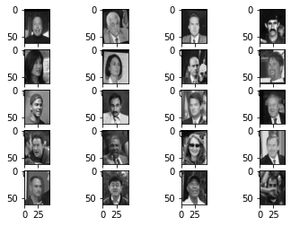
#Part d
k = 20
U,sig,V = np.linalg.svd(np.transpose(X_cent) @ X_cent)
U_pca = U[:,0:k]
sig_pca = np.diag(sig[0:k])
Vt_pca = V[0:k, :]
fig = plt.figure()
count = 0
for i in range(5):
for j in range(4):
ax = fig.add_subplot(5,4,count+1)
ax.imshow(np.reshape(Vt_pca[count],(62,47)), cmap = 'gray')
count = count + 1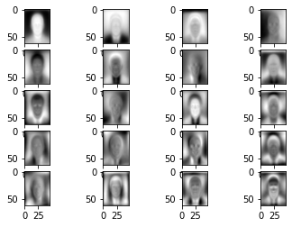
#Part e
var_exps = []
u,sig,vt = np.linalg.svd(np.transpose(X_cent) @ X_cent)
found_cut = False
for k in range(2914):
curr_var_exps = sum(sig[0:k])/sum(sig)
if found_cut == False and curr_var_exps > 0.95:
best_cutoff = k
found_cut = True
var_exps.append(sum(sig[0:k])/sum(sig))
plt.plot(np.arange(2914), var_exps)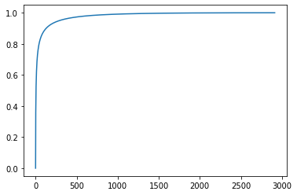
#The value printed from this cell is the cutoff to achieve
#95% of the variance explained
best_cutoff292#Part f
len(X)*0.810586.400000000001X_train = X_cent[0:10586, :]
X_test = X_cent[10587:len(X), :]def rec_loss(k):
U,sig,V = np.linalg.svd(np.transpose(X_train) @ X_train)
U_pca = U[:,0:k]
sig_pca = np.diag(sig[0:k])
Vt_pca = V[0:k, :]
norm_train = np.linalg.norm(X_train@np.transpose(Vt_pca)@Vt_pca - X_train, ord = 'fro')
norm_test = np.linalg.norm(X_test@np.transpose(Vt_pca)@Vt_pca - X_test, ord = 'fro')
train_loss = (1/(X_train.shape[0]*X_train.shape[1]))*(norm_train**2)
test_loss = (1/(X_test.shape[0]*X_test.shape[1]))*(norm_test**2)
return train_loss, test_losspcds = [10,20,50,100,500,1000,2914]
train_losses = []
test_losses = []
for k in pcds:
trl, tel = rec_loss(k)
train_losses.append(trl)
test_losses.append(tel)plt.plot(pcds, train_losses, label = "training loss")
plt.plot(pcds, test_losses, label = "test loss")
plt.legend()
plt.xlabel("Number of pcds used in projection")
plt.ylabel("value of Reconstruction Loss")
plt.title("Reconstruction Loss for Training and Test Data")Text(0.5, 1.0, 'Reconstruction Loss for Training and Test Data')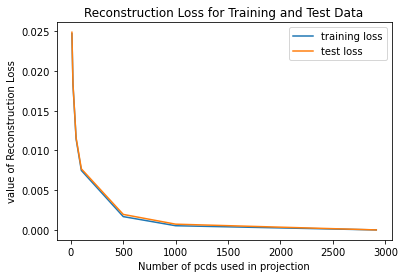
average_rl_train = np.mean(train_losses)
average_rl_test = np.mean(test_losses)
#Here is the average RecLoss for training and test respectively
average_rl_train, average_rl_test(0.009160736200737768, 0.009315588500130373)#Question 4
from sklearn import manifolddiabetes = datasets.load_diabetes()
X = diabetes.data
y = diabetes.target
descr = diabetes.DESCRX_tsne = manifold.TSNE().fit_transform(X)C:\Users\Buckleberry\AppData\Local\Programs\Python\Python310\lib\site-packages\sklearn\manifold\_t_sne.py:800: FutureWarning: The default initialization in TSNE will change from 'random' to 'pca' in 1.2.
warnings.warn(
C:\Users\Buckleberry\AppData\Local\Programs\Python\Python310\lib\site-packages\sklearn\manifold\_t_sne.py:810: FutureWarning: The default learning rate in TSNE will change from 200.0 to 'auto' in 1.2.
warnings.warn(plt.scatter(X_tsne[:, 0], X_tsne[:, 1], c = y, cmap = 'inferno')
plt.colorbar()<matplotlib.colorbar.Colorbar at 0x1f27b2c94b0>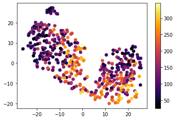
#Part b
#Our clusters correspond to the x value of our embedded values
X_tsne_info = manifold.TSNE().fit(X)C:\Users\Buckleberry\AppData\Local\Programs\Python\Python310\lib\site-packages\sklearn\manifold\_t_sne.py:800: FutureWarning: The default initialization in TSNE will change from 'random' to 'pca' in 1.2.
warnings.warn(
C:\Users\Buckleberry\AppData\Local\Programs\Python\Python310\lib\site-packages\sklearn\manifold\_t_sne.py:810: FutureWarning: The default learning rate in TSNE will change from 200.0 to 'auto' in 1.2.
warnings.warn(plt.scatter(X_tsne[:, 0], X_tsne[:, 1], c = X_tsne[:,0], cmap = 'inferno')
plt.colorbar()<matplotlib.colorbar.Colorbar at 0x1f209b1f640>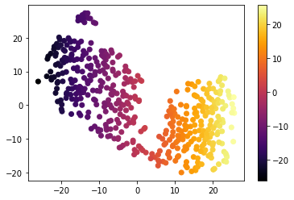
#Part c#Part dfrom sklearn import decomposition
X_pca = decomposition.PCA(n_components=2).fit_transform(X)plt.scatter(X_pca[:, 0], X_pca[:, 1], c = y, cmap = 'inferno')
plt.colorbar()<matplotlib.colorbar.Colorbar at 0x1f209412a70>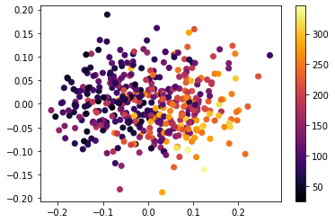
#Part e
X_train = X[:100]
X_test = X[-342:]
y_train = y[:100]
y_test = y[-342:]b_col = np.ones(100)
b_col.reshape([1,100])
X_train_mod = np.insert(X_train,10,1, axis = 1)wb_ols = np.linalg.inv(np.transpose(X_train_mod)@X_train_mod)@np.transpose(X_train_mod)@y_trainb_ols = wb_ols[10]
w_ols = wb_ols[0:10]test_mse = (1/len(y_test))*np.linalg.norm(X_test@w_ols + b_ols*np.ones(342) - y_test)**2
test_mse3430.9233826005247y_test_pred = X_test@w_ols + b_ols*np.ones(342)
num_cor = 0
num_discor = 0
for i in range(len(y_test)):
for j in range(len(y_test)):
if i != j:
if y_test[i] > y_test[j]:
if y_test_pred[i] > y_test_pred[j]:
num_cor += 1
else:
num_discor += 1
C_index = num_cor/(num_cor + num_discor)
C_index0.7452930850514576#Part f
X_train = X[:100]
X_test = X[-342:]
y_train = y[:100]
y_test = y[-342:]
def ridge(X,y,lam):
y_train = y
X_train = np.insert(X,10,1, axis = 1)
wb_ols = np.linalg.inv(np.transpose(X_train)@X_train + lam*np.identity(X_train.shape[1]))@np.transpose(X_train)@y_train
b_ols = wb_ols[-1]
w_ols = wb_ols[0:10]
return w_ols,b_ols
def pca_reg(X,y,k):
y_train = y
X_train = X
X_pca = decomposition.PCA(n_components=k).fit(X_train)
mean = np.repeat([X_pca.mean_], repeats=X_train.shape[0], axis=0)
U,sig,V = np.linalg.svd(np.transpose(X_train) @ X_train)
U_pca = U[:,0:k]
sig_pca = np.diag(sig[0:k])
Vt_pca = V[0:k, :]
X_train = (X_train - mean)@np.transpose(Vt_pca)
X_train = np.insert(X_train,1,1, axis = 1)
wb_ols = np.linalg.inv(np.transpose(X_train)@X_train)@np.transpose(X_train)@y_train
if k == 1:
b_ols = wb_ols[0]
w_ols = 1
b_ols = wb_ols[-1]
w_ols = wb_ols[0:k]
return w_ols,b_ols,mean,np.transpose(Vt_pca)
def cross_val(X,y,type, num_cv, lambs = None, ks = None):
val_mses = np.ones(num_cv)
train_mses = np.ones(num_cv)
fold_size = X.shape[0]//num_cv
for i in range(num_cv):
if i == 0:
X_val = X[0:fold_size]
y_val = y[0:fold_size]
X_train = X[(fold_size - X.shape[0]):]
y_train = y[(fold_size - X.shape[0]):]
elif i == 9:
X_val = X[-fold_size:]
y_val = y[-fold_size:]
X_train = X[:90]
y_train = y[:90]
else:
X_val = X[i*fold_size:((i+1)*fold_size - 1)]
y_val = y[i*fold_size:((i+1)*fold_size - 1)]
X_train = np.r_[X[:i*fold_size],X[(i)*fold_size:]]
y_train = np.r_[y[:i*fold_size],y[(i)*fold_size:]]
if type == 'r':
w_ols,b_ols = ridge(X_train, y_train, lambs[i])
train_mse = (1/len(y_train))*np.linalg.norm(X_train@w_ols + b_ols*np.ones(len(y_train)) - y_train)**2
val_mse = (1/len(y_val))*np.linalg.norm(X_val@w_ols + b_ols*np.ones(len(y_val)) - y_val)**2
val_mses[i] = val_mse
train_mses[i] = train_mse
if type == "p":
w_ols,b_ols,mean,pcds = pca_reg(X_train,y_train,ks[i])
train_mse = (1/len(y_train))*np.linalg.norm((X_train-mean)@pcds@w_ols + b_ols*np.ones(len(y_train)) - y_train)**2
val_mse = (1/len(y_val))*np.linalg.norm((X_val-mean[0:X_val.shape[0]])@pcds@w_ols + b_ols*np.ones(len(y_val)) - y_val)**2
val_mses[i] = val_mse
train_mses[i] = train_mse
if type == 'k':
knn = KNeighborsRegressor(n_neighbors = ks[i])
knn.fit(X_train, y_train)
y_train_pred = knn.predict(X_train)
y_predict = knn.predict(X_val)
train_mse = np.mean((y_train_pred - y_train)**2)
val_mse = np.mean((y_predict - y_val)**2)
val_mses[i] = val_mse
train_mses[i] = train_mse
return train_mses, val_mseslambdas = [10**(-9),10**(-8),10**(-7),10**(-6),10**(-5),10**(-4),10**(-3),10**(-2),10**(-1),1]
train_mses,val_mses = cross_val(X_train, y_train, 'r', lambs = lambdas, num_cv = 10 )plt.plot(np.log10(lambdas)[-6:], train_mses[-6:], label = "training mses")
plt.plot(np.log10(lambdas)[-6:], val_mses[-6:], label = "validation mses")
plt.legend()
plt.xlabel("Log base 10 lambda")
plt.ylabel("MSE")
plt.title("Vlidation and Training Error for Ridge CV")Text(0.5, 1.0, 'Vlidation and Training Error for Ridge CV')
#Based on my plot, I would say our best value for lambda is 10^-3 as it #Here we calculate the test_mse with our new lambda optimization
best_lambda = 10**(-3)
w_best,b_best = ridge(X_train, y_train, best_lambda)
test_mse = (1/len(y_test))*np.linalg.norm(X_test@w_best + b_best*np.ones(len(y_test)) - y_test)**2
test_mse3398.1572795040015#Now we calculate the C-index with our best lambda
y_test_pred = X_test@w_best + b_best*np.ones(342)
num_cor = 0
num_discor = 0
for i in range(len(y_test)):
for j in range(len(y_test)):
if i != j:
if y_test[i] > y_test[j]:
if y_test_pred[i] > y_test_pred[j]:
num_cor += 1
else:
num_discor += 1
C_index = num_cor/(num_cor + num_discor)
C_index0.745688913365229#part g
ks = np.arange(10) + 1
train_mses,val_mses = cross_val(X_train, y_train, 'p', ks = ks, num_cv = 10 )plt.plot(ks, train_mses, label = "training mses")
plt.plot(ks, val_mses, label = "validation mses")
plt.legend()
plt.xlabel("K value (# of principal components)")
plt.ylabel("MSE")
plt.title("Vlidation and Training Error for PCA CV")Text(0.5, 1.0, 'Vlidation and Training Error for PCA CV')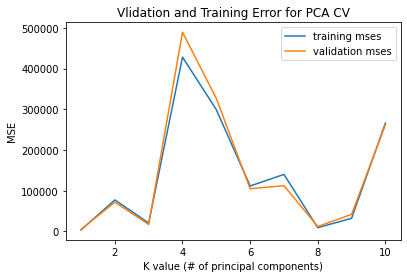
#From this plot I would say that k = 8 does the best at minimizing both MSE values
best_k = 8#Here I print our best k test mse
w_best,b_best,mean,pcds = pca_reg(X_train, y_train, best_k)
mean = np.repeat([mean[0]], repeats=342, axis=0)
test_mse = (1/len(y_test))*np.linalg.norm((X_test-mean)@pcds@w_best + b_best*np.ones(len(y_test)) - y_test)**2
test_mse11263.660145902464#Now we calculate the C-index with our best k
y_test_pred = (X_test-mean)@pcds@w_best + b_best*np.ones(342)
num_cor = 0
num_discor = 0
for i in range(len(y_test)):
for j in range(len(y_test)):
if i != j:
if y_test[i] > y_test[j]:
if y_test_pred[i] > y_test_pred[j]:
num_cor += 1
else:
num_discor += 1
C_index = num_cor/(num_cor + num_discor)
C_index0.5214435686503975#It appears that our C-index has become worse#Part h
X_train = X[:342]
X_test = X[-100:]
y_train = y[:342]
y_test = y[-100:]
b_col = np.ones(100)
b_col.reshape([1,100])
X_train_mod = np.insert(X_train,10,1, axis = 1)
wb_ols = np.linalg.inv(np.transpose(X_train_mod)@X_train_mod)@np.transpose(X_train_mod)@y_train
b_ols = wb_ols[10]
w_ols = wb_ols[0:10]
test_mse = (1/len(y_test))*np.linalg.norm(X_test@w_ols + b_ols*np.ones(100) - y_test)**2
print("Test MSE for OLS")
test_mseTest MSE for OLS2693.859913333543y_test_pred = X_test@w_ols + b_ols*np.ones(100)
num_cor = 0
num_discor = 0
for i in range(len(y_test)):
for j in range(len(y_test)):
if i != j:
if y_test[i] > y_test[j]:
if y_test_pred[i] > y_test_pred[j]:
num_cor += 1
else:
num_discor += 1
C_index = num_cor/(num_cor + num_discor)
print("C-index for OLS")
C_indexC-index for OLS0.7677955789900629lambdas = [10**(-9),10**(-8),10**(-7),10**(-6),10**(-5),10**(-4),10**(-3),10**(-2),10**(-1),1]
train_mses,val_mses = cross_val(X_train, y_train, 'r', lambs = lambdas, num_cv = 10 )
plt.plot(np.log10(lambdas)[-6:], train_mses[-6:], label = "training mses")
plt.plot(np.log10(lambdas)[-6:], val_mses[-6:], label = "validation mses")
plt.legend()
plt.xlabel("Log base 10 lambda")
plt.ylabel("MSE")
plt.title("Vlidation and Training Error for Ridge CV")Text(0.5, 1.0, 'Vlidation and Training Error for Ridge CV')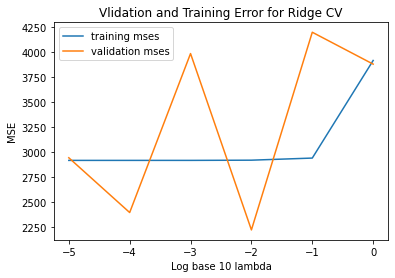
best_lambda = 10**(-2)
w_best,b_best = ridge(X_train, y_train, best_lambda)
test_mse = (1/len(y_test))*np.linalg.norm(X_test@w_best + b_best*np.ones(len(y_test)) - y_test)**2
test_mse2728.718136235313#part g
ks = np.arange(10) + 1
train_mses,val_mses = cross_val(X_train, y_train, 'p', ks = ks, num_cv = 10 )plt.plot(ks, train_mses, label = "training mses")
plt.plot(ks, val_mses, label = "validation mses")
plt.legend()
plt.xlabel("K value (# of principal components)")
plt.ylabel("MSE")
plt.title("Vlidation and Training Error for PCA CV")Text(0.5, 1.0, 'Vlidation and Training Error for PCA CV')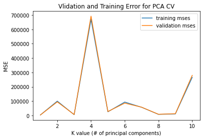
#Here I print our best k test mse
best_k = 3
w_best,b_best,mean,pcds = pca_reg(X_train, y_train, best_k)
mean = np.repeat([mean[0]], repeats=100, axis=0)
test_mse = (1/len(y_test))*np.linalg.norm((X_test-mean)@pcds@w_best + b_best*np.ones(len(y_test)) - y_test)**2
test_mse6184.424090137966#In general it appears that as we increase ntrain from 100 to 300
#There is an increase in accuracy of performance for each method.
#Particulary, it appears that each method is getting closer to the
#OLS value of Test MSE, which is what I would expect. More training
#data allows for our classifier to be more specialized and have a
#better understanding of the underlying population. #Part i
from sklearn.neighbors import KNeighborsRegressor
X_train = X[:342]
X_test = X[-100:]
y_train = y[:342]
y_test = y[-100:]ks = [1,2,3,5,10,20,30,50,100,4]
train_mses,val_mses = cross_val(X_train, y_train, 'k', ks = ks, num_cv = 10 )plt.plot(ks[0:9], train_mses[0:9], label = "training mses")
plt.plot(ks[0:9], val_mses[0:9], label = "validation mses")
plt.legend()
plt.xlabel("K value (# of principal components)")
plt.ylabel("MSE")
plt.title("Vlidation and Training Error for PCA CV")Text(0.5, 1.0, 'Vlidation and Training Error for PCA CV')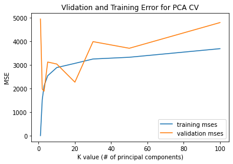
val_mses
#It is clear that our lowest validation mse occurs
#at k = 3 neighbors
best_k = 3knn = KNeighborsRegressor(n_neighbors = 3)
knn.fit(X_train, y_train)
y_predict = knn.predict(X_test)
test_mse = np.mean((y_predict - y_test)**2)
print("Our best test mse for the best k in our cross validation is:")
test_mseOur test mse for the best k in our cross validation is:3896.5122222222217num_cor = 0
num_discor = 0
for i in range(len(y_test)):
for j in range(len(y_test)):
if i != j:
if y_test[i] > y_test[j]:
if y_predict[i] > y_predict[j]:
num_cor += 1
else:
num_discor += 1
C_index = num_cor/(num_cor + num_discor)
print("The C-Index for our best k (3) is:")
C_index0.7144595416751166